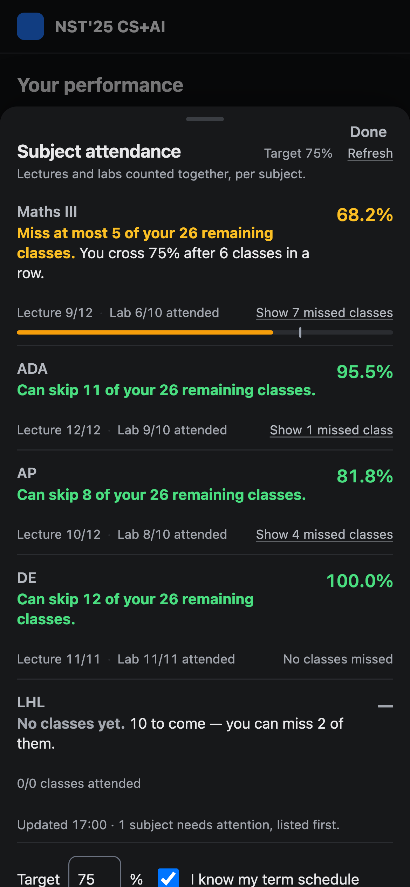

The NST Attendance extension only runs on desktop Chrome — no browser on Android or iOS supports extensions. This bookmarklet gives you the same card on your phone.
On a computer, drag this to your bookmarks bar:
On a phone, tap Copy and follow the steps below.
If your bookmarks sync (Chrome signed in, or iCloud for Safari), do it once on the laptop and it appears on the phone.
my.newtonschool.co and go to any course page.iPhone / Safari
Android / Chrome
Chrome on Android won't run a bookmarklet you tap from the bookmarks list — you have to pick it from the address bar. Safari has no such limitation.

It runs on the portal's own page, so it uses the session already in your browser. It reads your attendance from the same portal API the site itself uses, works out the combined lecture + lab figure per subject, and shows it in a sheet. Tap it again to close.
It refuses to run anywhere except my.newtonschool.co. Nothing is typed
in, nothing is sent to any server, and no account details leave your phone. Your target and term
schedule are saved on that phone only, separately from the desktop extension — there is no server
to sync them through.
The bookmarklet loads its code from this page's own site, so it updates when the project does. The source is in the repository; it is built from the extension's own files, so the phone and the desktop card always agree.